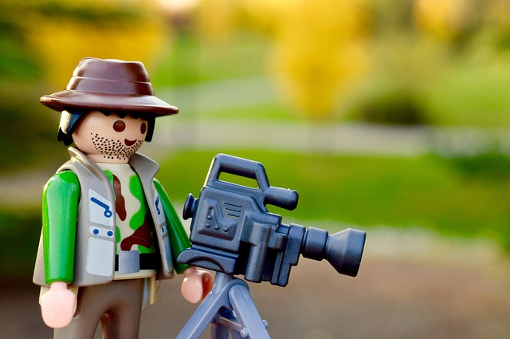

Educational Technology Integrated Thesis Project
Educational Technology 0858-793
Keywords: thesis, research, multimedia, learning sciences, master piece

The integrated thesis project of the Master’s of Arts in Educational Technology is the culminating experience of a student’s time in the program, and displays the range of new knowledge and abilities they have acquired during their studies.
All thesis projects:
- reflect a deep understanding of the research around educational technology and instructional design
- address a specific issue or problem of significance and importance to the student
- produce a “professional” level work
- introduce something “new” to the field: new research, instructional method, tech used in a novel way, a new technology
There is no fixed format for the project — we encourage creative and innovative ideas. Frequently, thesis projects fall into one of these broad categories:
- production of a mutlimedia or interactive educational artifact (e.g. a game, mobile app, website, data visualization, animation, or video)
- design of curriculum, teaching resources, or scholastic program integrating digital technologies
- a theoretical paper that forwards an original idea or concept related to educational technology
- an empirical study that tests a research hypothesis related to educational technology
- a research project that is part of ongoing research being conducted by one of the Educational Technology faculty or partners
Projects vary and should be designed in collaboration with the student’s advisor. The best projects focus on an area of intense interest to the student, and serve to forward the students’ professional goals; whether those goals are to change careers, advance in their current profession, or continue studying at the doctoral level.
Registering for the thesis project
You do not register for EDT 793 through CLASS. You must register by submitting a proposal to your advisor by completing the EDT 793 Thesis Proposal Form.
Often, the best way to start a proposal is to send a few ideas to your advisor. Think about:
- what technologies you wan to work with and learn more about (e.g. augmented reality, data visualization, interactive video)
- think about what domain or population you are interested in serving (e.g. science education, adult learners, early childhood, literacy)
- consider what you will produce at the end, and you will use it:
- multimedia or software that is part of your portfolio
- a new course or program that can be used in your school
- a report or paper that is useful where you work
- an scholarly article that can be submitted for professional or academic publications, or used as a writing sample for PhD programs
You can start writing down 3-5 different ideas, sharing them with friends and mentors, and sending them to your faculty advisor(s). These ideas can start the conversation around your thesis project and lead to the eventual proposal.
In general, creating a website is not sufficient for a thesis project. If you propose to create a video, it should be on a topic with scarce resources, and the video should be “professional” quality for an instructional technologist/multimedia producer.
Completing the thesis project
The thesis project is completed individually. There are no class meetings or regularly scheduled assignments. Your adviser will help you set goals, create a timeline, and provide guidance and feedback as needed. The thesis is pass / fail — you should present periodic drafts/prototypes to your adviser to ensure that you are on track.